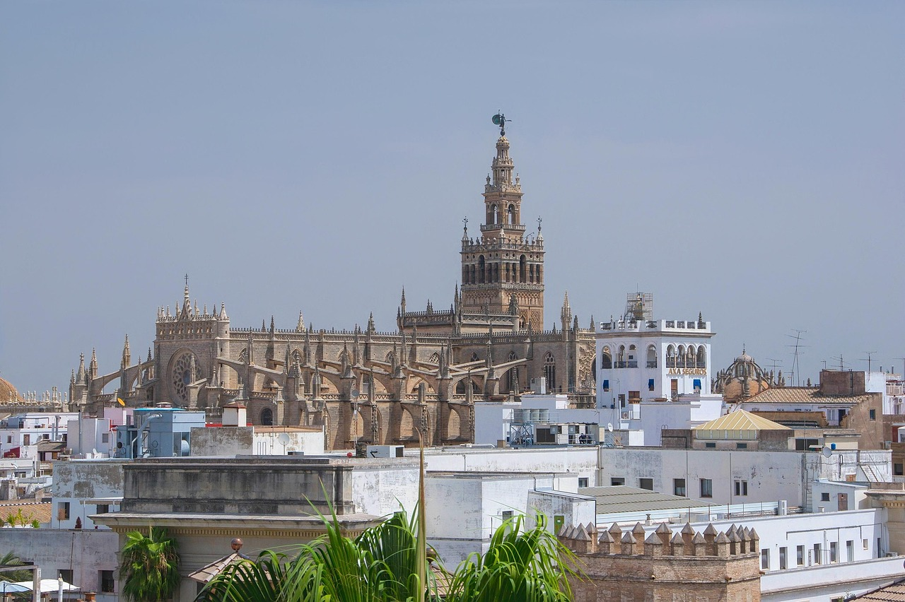
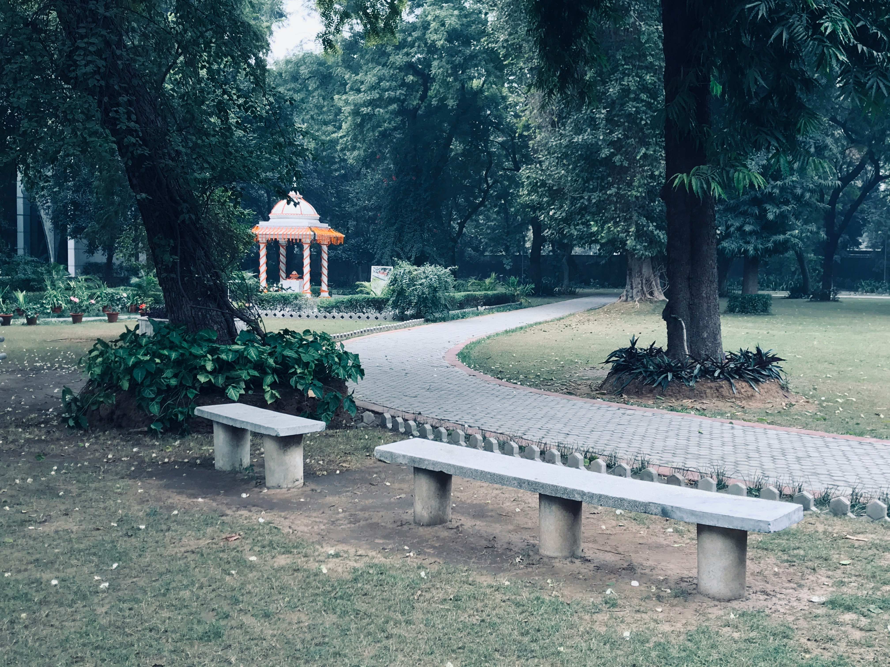
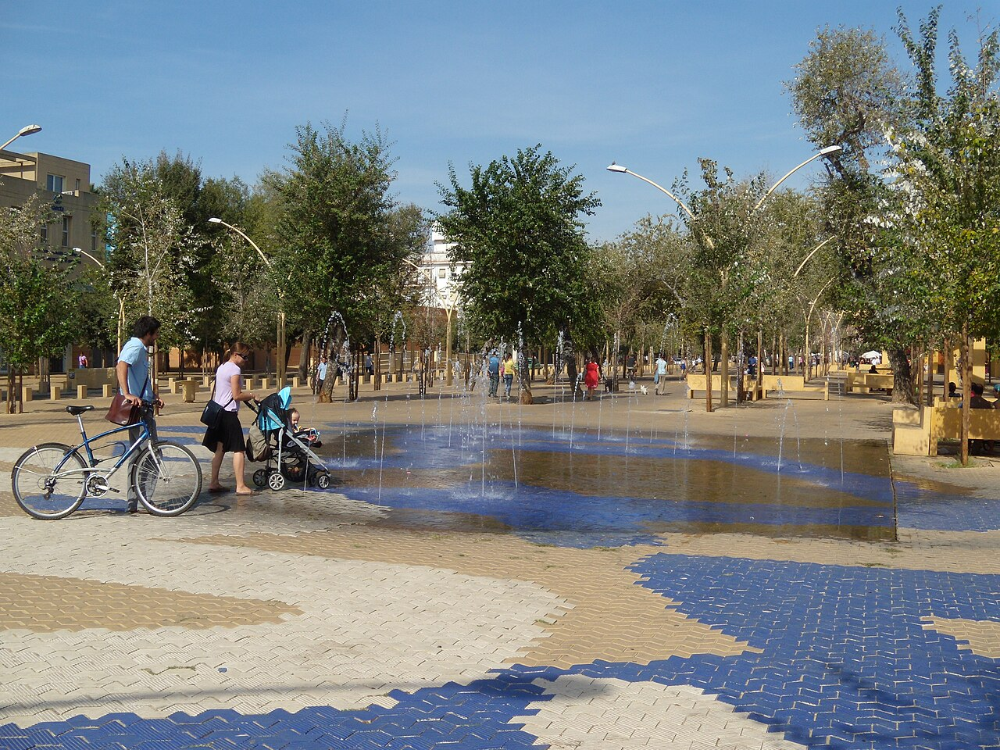

Sevilla, capital de Andalucía, combina historia, arte, flamenco y
gastronomía. Sus calles, plazas y monumentos transmiten siglos de
cultura y tradición. ¡Una ciudad que te enamorará!
10 sitios imprescindibles que ver en Sevilla

Catedral de Sevilla
¿Qué es?
El mayor templo gótico del mundo.
¿Por qué ir?
“Hagamos un templo tan grandioso que los que lo vieren labrado nos tengan por locos”. Según las crónicas
de la época estas fueron las palabras que el Cabildo Catedralicio pronunció antes de ponerse manos a la
obra y levantar una de las catedrales más inmensas y bellas del mundo. Y es que la Catedral de Sevilla
deja perplejo por sus proporciones: todo es grande en ella. Tanto, que hizo falta todo un siglo para
finalizar su construcción (1403-1507), realizada sobre una antigua mezquita. No hay que perderse el
retablo mayor, considerado por muchos una de las obras más destacadas de la historia del arte. Tampoco
está de más presentar los respetos ante los restos del mismísimo Cristóbal Colón, cuyo mausoleo se
encuentra en el interior de la catedral.
Real Alcázar
¿Qué es?
Palacio real en uso más antiguo de Europa, mezcla de estilos islámico,
gótico, renacentista y barroco, con jardines espectaculares.
¿Por qué ir?
Son muchas las civilizaciones las que han hecho del Real Alcázar, a lo largo de la historia, uno de los
conjuntos monumentales más maravillosos del mundo. Por ello en él se pueden contemplar una interesante
mezcla de estilos que van del islámico al mudéjar, pasando por el gótico, el renacentista o el barroco.
Tras sus murallas se esconden todo un universo de jardines, palacios y fortalezas repletas de leyendas: el
Jardín de los Poetas, el Patio de las Doncellas, el Salón de Embajadores… ¡Tan especial son sus estancias
que hasta la serie Juego de Tronos o la película Alatriste ficharon el lugar como escenario para sus
producciones! Los conciertos que se llevan a cabo todas las noches de verano en sus jardines son un
auténtico 'must'.
Plaza de España
¿Qué es?
Esta plaza abraza y homenajea, con sus 170 metros de diámetro, a América.
¿Por qué ir?
La Plaza de España, obra del arquitecto insigne de Sevilla, Aníbal González, es uno de los rincones más
majestuosos y maravillosos de toda la ciudad. Muestra del movimiento regionalista típico de la época y de
la ciudad, fue proyectada como uno de los espacios emblemáticos de la Exposición Iberoamericana de 1929 y
se encuentra en los márgenes del popular Parque de María Luisa. Una de los detalles más característicos
son sus bancos de azulejos en los que quedan representadas las provincias de España, y no es extraño
encontrar a turistas a cualquier hora del día fotografiándose frente al que le corresponde. Un canal
recorre todo el perímetro de la plaza y una experiencia divertida es montarse en una de las barcas que se
alquilan y navegar por él mientras se disfruta de las vistas. ¿Una última curiosidad? La plaza no solo ha
enamorado a visitantes, también a directores de cine que la han utilizado como escenario de sus películas.
‘Lawrence de Arabia’ o e ‘Episodio II’ de Star Wars son solo dos de ellas.
Torre del Oro
¿Qué es?
Una antigua torre defensiva del siglo XIII que protegía la ciudad desde el Guadalquivir.
¿Por qué ir?
En el margen izquierdo del Guadalquivir se yergue esta hermosa torre defensiva que fue mandada levantar
por el gobernador almohade de Sevilla, Abù l-Ulà, en el siglo XIII. Desde ella se extendía una gruesa
cadena que recorría el río hasta la orilla opuesta y evitaba así el paso de ningún buque que no obtuviera
el permiso pertinente. Forma parte de una de las estampas más típicas del Guadalquivir a su paso por
Sevilla y su nombre proviene, según se cuenta, de los reflejos dorados que desprendían los azulejos que la
cubrían en el pasado. Actualmente se pueden visitar tanto elpequeño museo naval de dos plantas que alberga
en el interior como la terraza panorámica.
Metropol Parasol
¿Qué es?
La estructura de madera más grande del mundo adorna el centro histórico de Sevilla.
¿Por qué ir?
Cuando el alemán Jürgen Mayer ganó el concurso para realizar este proyecto, nadie imaginaba lo que
supondría. La opinión de los sevillanos se vio dividida desde entonces: hay quienes aman Las Setas de la
Encarnación, como se las conoce popularmente, y hay quienes las odian. La cuestión es que, sin dejar a
nadie indiferente, esta inmensa estructura que simula seis setas gigantes y a cuya parte superior se puede
acceder a través de un ascensor, se ha convertido en uno de los nuevos iconos de Sevilla. Las vistas al
atardecer desde su mirador son espectaculares. En sus bajos se halla el Mercado de la Encarnación y el
Antiquarium, en el que visitar las ruinas romanas encontradas durante los años que duró la obra.
Barrio de Triana
¿Qué es?
El barrio más auténtico y especial de Sevilla.
¿Por qué ir?
Por contemplar las alegres fachadas de colores de la Calle Betis a la orilla del Guadalquivir. Por pasear
por sus calles y respirar la esencia del barrio. Por entender el por qué precisamente en este lugar surgió
el germen de artes tan destacados como el flamenco o la cerámica. Por charlar con su gente y entender el
sentimiento que les hace reconocerse como trianeros antes que sevillanos. Visitar Triana supone recorrer
la calle San Jacinto, visitar la Capilla de los Marineros y admirar la Esperanza de Triana. Contemplar la
Giralda desde el Altozano y conocer la mítica calle Castilla. ¿Un momento único? La famosa Velá de Santa
Ana, que se celebra en la calle Betis cada verano, es perfecta para entender el por qué Triana es tan
especial.

Parque de María Luisa
¿Qué es?
El parque más bello e histórico de toda Sevilla.
¿Por qué ir?
Es un auténtico pulmón verde de la capital hispalense y recorrer sus entramados es una auténtica delicia.
En el pasado formaba parte de los jardines privados del Palacio de San Telmo, pero en 1893 fueron donados
por la infanta María Luisa Fernanda de Borbón a la ciudad de Sevilla y desde entonces se convirtió en uno
de los rincones preferidos por todos aquellos sevillanos y turistas que quieren practicar algo de deporte
o, simplemente, estar en contacto con este hermoso trocito de naturaleza. Dos de sus mayores atractivos
son la Plaza de España y la Plaza de América, levantadas con motivo de la Exposición Iberoamericana de
Sevilla en 1929. El ambiente romántico y la paz que se respiran en el Parque de María Luisa invitan a
pasear por sus senderos sin prisas.
Casa de Pilatos
¿Qué es?
Un espectacular palacio sevillano del siglo XV hogar de los Duques de Medinaceli.
¿Por qué ir?
Simplemente porque será una de esas visitas que quedarán en la retina para siempre. Con su hermoso patio
elaborado en mármol, sus celosías, sus cuidados trabajados de carpintería y los bellísimos azulejos que
decoran sus suelos y paredes, el Palacio de Pilatos combina el estilo renacentista italiano con el mudéjar
español y es, sin duda, uno de los rincones más bellos de la ciudad. La colección de arte de los Duques,
que se puede contemplar si se adquiere la entrada que incluye la visita a la parte superior del palacio,
es extraordinaria. ¿Un consejo? Sentarse a contemplar sin prisas sus jardines es una auténtica delicia.

Alameda de Hércules
¿Qué es?
Histórica plaza hoy convertida en uno de los barrios más modernos y con más ambiente de Sevilla.
¿Por qué ir?
El que ostenta el título del jardín público más antiguo de España, hoy día se ha renovado y transformado
en una extensa explanada peatonal totalmente adoquinada y repleta de árboles, fuentes y columpios para los
más pequeños. En los alrededores, un sinfín de negocios dedicados a la restauración en los que poder
saciar el apetito con recetas mexicanas (Mano de Santo), las mejores pizzas italianas (Al Solito Posto) o
tapas de diseño (El Aljibe). Uno de los elementos con más carga histórica son las dos columnas romanas
colocadas en el siglo XVI en el extremo sur de la plaza, que sostienen las esculturas de Julio César y
Hércules. Al caer la noche, el barrio se transforma en una zona de ambiente en la que poder aguantar hasta
la madrugada.
Acuario de Sevilla
¿Qué es?
Un acuario que recrea el viaje que realizó Magallanes en el siglo XVI en su primera vuelta al mundo.
¿Por qué ir?
Aproximadamente 400 especies marinas y más de 7 mil ejemplares –entre los que se encuentran tiburones
martillo, tiburones toro o un pulpo gigante-, 3 mil metros cúbicos de agua y un inmenso tanque con más de
9 metros de profundidad: estos son solo algunos de los datos que resumen lo más llamativo del acuario, el
de mayor biodiversidad de Europa. Un paseo que recrea la aventura que vivió Fernando de Magallanes en el
siglo XVI y que permite descubrir la diversidad marina que fue descubriendo durante aquel hito histórico.
En el Acuario se pueden vivir además experiencias únicas, como dormir entre tiburones o cenar junto a su
Oceanario.